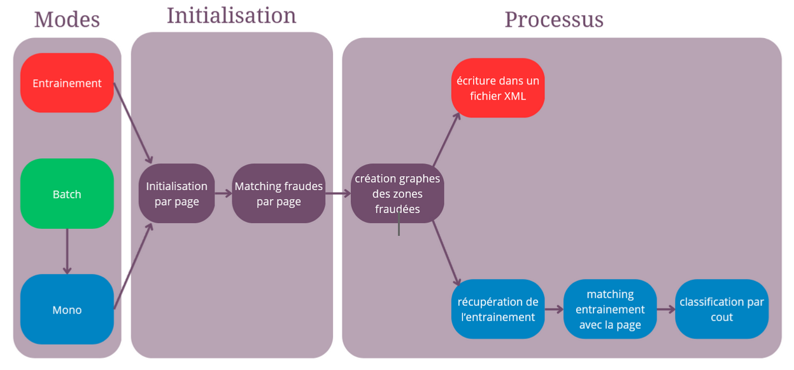
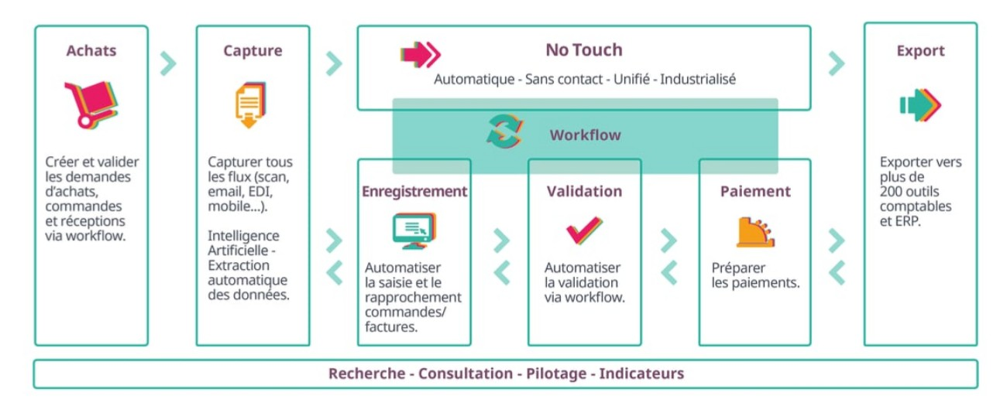
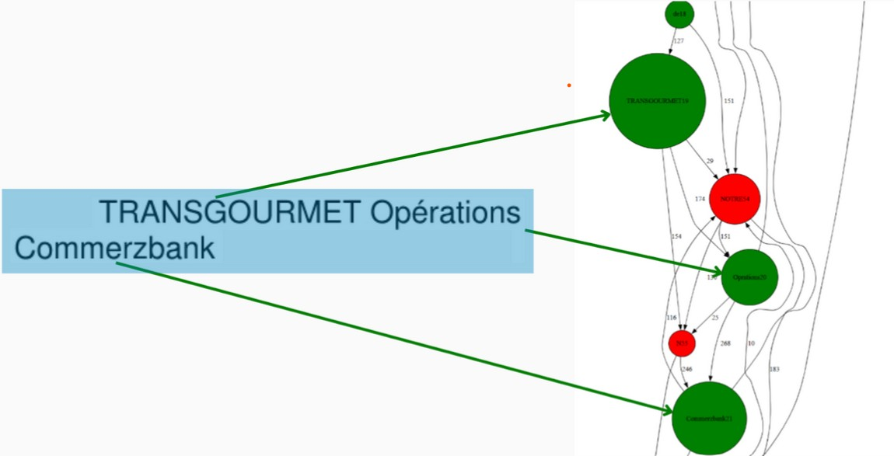
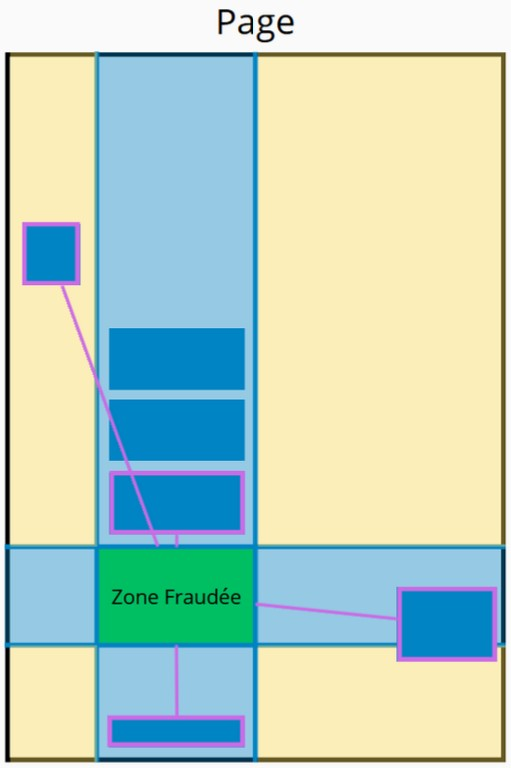

Bonjour, je m'appelle Tim Broussard, et je suis actuellement en deuxième année de BUT Informatique à l'IUT de Montpellier-Sète, dans le parcours Réalisation d'Applications : Conception, Développement, Validation (RACDV).
Mon parcours m'a permis d'acquérir des compétences solides en développement d'applications ainsi qu'en gestion de projet. J'aime notamment explorer différents univers et apprendre de nouveaux langages de programmation et de nouvelles technologies pour toujours améliorer mes compétences.
J'ai eu la chance de participer à des événements tels que la Nuit de l'Info, où j'ai pu mettre en pratique mes connaissances tout en travaillant en équipe pour résoudre des problématiques complexes dans un temps limité. Ces expériences m'ont non seulement aidé à renforcer mes compétences techniques, mais aussi à développer des capacités essentielles comme le travail d'équipe, la gestion du temps, et la prise de décision sous pression.
Après mon BUT, je souhaite intégrer une école d'ingénieur qui me permettra d'améliorer encore mes connaissances et de me permettre de trouver le métier que je voudrais faire en suite.
Mes Projets
SAE Train
Une SAE dans laquelle nous devions créer une application en Java reproduisant le jeu de société Train
Nuit de l'Info 2024
Le site web que nous avons réalisé lors de la nuit de l'info 2024 sur le thème "et si l'océan était un corps humain ?"
SAE Gestion des avis de poursuite d'études
Une SAE où nous devions créer un site web pour permettre au jury de l'IUT de gérer les avis de poursuites d'études des étudiants

Stage dans le secteur R&D chez Yooz
Stage de 3 mois chez Yooz sur le sujet "Détection optimisée des incohérences dans les fichiers PDF"
A venir
A venir
J'aime m'investir dans de nouveaux projets !
SAÉ 1 - Développement du jeu Train en Java
Durée: 1 semestreÉquipe: 2 personnesTechnologies: Java, JavaFX, FXML, Scene Builder, GitLab, Intellij IDEA
Contexte: Une SAE dans laquelle nous devions créer une application en Java reproduisant le jeu de société Train.
Compétences acquises:
Partir des exigences et aller jusqu'à une application complète Séléctionner les algorithmes adéquats pour répondre à problème donné Appliquer une démarche de suivi de projet en fonction des besoins métiers des clients et des utilisateurs Situer son rôle et ses missions au sein d'une équipe informatique
Détails:
Lors de cette SAE réalisée en binôme, en première année de BUT Informatique, nous avons eu à réaliser une application qui reproduise le jeu de société Train.
Dans un premier temps, nous avons dû développer en Java, l'application sans interface (avec le terminal), pour cette partie back end, gérer les effets de toutes les cartes et écrire le code de chacune
Ensuite, nous avons eu à réaliser une interface graphique pour cette application en JavaFX basé sur un template de base qui nous a été donné, nous devions notamment gérer la gestion des tuiles, ainsi que de nouvelles contraintes propre à l'interface graphique notamment le coût des tuiles pour poser des rails, les tuiles interdites ainsi que les tuiles bonus.
Ainsi, cette SAE m'aura permis de développer mes connaissances en Java, JavaFX ainsi qu'initier la gestion du travail en équipe.
Contexte: Le site web que nous avons réalisé lors de la nuit de l'info 2024 sur le thème "et si l'océan était un corps humain ?"
Compétences acquises:
Partir des exigences et aller jusqu'à une application complète Déployer des services dans une architecture réseau Appliquer une démarche de suivi de projet en fonction des besoins métiers des clients et des utilisateurs Situer son rôle et ses missions au sein d'une équipe informatique
Détails:
Durant la nuit de l'info 2024, nous avons eu à réaliser un site web sur le thème "et si l'océan était un corps humain ?". La nuit de l'info est un événement sur une nuit durant laquelle chaque équipe doit réaliser un site ou une application sur un thème imposé, en sachant que chaque équipe doit de plus choisir des défis supplémentaires avec à la clé des prix pour les meilleures équipes.
Pour ce projet, nous avons constitué une équipe de 9 membres. Nous avons ensuite réparti cette équipe en plusieurs groupes où chacun avait une tâche assignée. Dans mon cas, j'ai eu à réaliser un chatbot qui répond sur le thème national "et si l'océan était un corps humain ?", incluant des easter eggs faisant apparaître des pop-ups.
Cela m'a permis de développer davantage mes compétences en PHP, en gestion de projets ainsi que d'apprendre les bases du JavaScript.
Contexte: Une SAE où nous devions créer un site web pour permettre au jury de l'IUT de gérer les avis de poursuites d'études des étudiants.
Compétences acquises:
Partir des exigences et aller jusqu'à une application complète Séléctionner les algorithmes adéquats pour répondre à problème donné Déployer des services dans une architecture réseau Optimiser une base de données, interagir avec une application et mettre en oeuvre la sécurité Appliquer une démarche de suivi de projet en fonction des besoins métiers des clients et des utilisateurs Situer son rôle et ses missions au sein d'une équipe informatique
Détails:
Lors de cette SAE, nous avons eu à réaliser un site web pour le jury de l'IUT leur permettant de gérer les avis de poursuite d'études, mais permettant également aux universités de consulter les avis de poursuite d'études émis par les étudiants. Pour ce projet, nous étions un groupe de 4 et nous avons eu 3 mois pour réaliser ce site web. Lors de cette SAE, nous avons appris les méthodes SCRUM nous permettant de nous répartir le travail efficacement et de planifier au mieux les tâches demandées par notre client.
Durant cette SAE, j'ai pu grandement développer mes compétences en PHP, HTML, CSS pour la partie réalisation du site web. J'ai également pu accroître mes compétences en SQL où nous avons réalisé des procédures, ainsi que des index. Enfin, la partie gestion de projet a été une partie majeure de ce projet et nous avons donc grandement appris à travailler à plusieurs sans se gêner et efficacement.
Page principaleListe étudiantsPage création comptes
Contexte: Stage de 3 mois chez Yooz sur le sujet "Détection optimisée des incohérences dans les fichiers PDF".
Compétences acquises:
Partir des exigences et aller jusqu'à une application complète Séléctionner les algorithmes adéquats pour répondre à problème donné Appliquer une démarche de suivi de projet en fonction des besoins métiers des clients et des utilisateurs Situer son rôle et ses missions au sein d'une équipe informatique
Détails:
Durant mon stage de trois mois au sein de l’entreprise Yooz, j’ai été intégré à l’équipe «Fraude & Technologies» du département Recherche. Ma mission principale a consisté à améliorer un outil de détection d’incohérences dans les documents PDF, utilisé dans le cadre de la solution YoozProtect pour identifier les fraudes documentaires. Le projet avait déjà été amorcé par d'autres stagiaires précédemment, et j’ai donc dû prendre en main un code existant particulièrement dense, écrit en C++, un langage que je ne connaissais pas au début du stage.
J’ai donc adopté une approche progressive et rigoureuse. Dans un premier temps, je me suis consacré à comprendre et m’adapter à l’architecture du projet. Cela m’a demandé de me former au C++ en autodidacte, en m’appuyant sur mes connaissances en programmation orientée objet, notamment acquises en Java. Une fois cette base technique consolidée, j’ai pu entamer un travail de réappropriation du code, en le restructurant pour qu’il puisse s’intégrer plus efficacement dans la chaîne de traitement de Yooz. Concrètement, cela signifiait passer d’un traitement par lot de documents à un traitement page par page, mieux adapté aux besoins de l’entreprise.
Dans un second temps, j’ai travaillé à l’amélioration de l’algorithme de détection, en ciblant la réduction du nombre de faux positifs. J’ai analysé finement les erreurs de classification, en identifiant les problèmes de l’algorithme existant, et j’ai ainsi pu mettre en place plusieurs correctifs.
Au fil de ces améliorations, les performances de l’outil se sont nettement améliorées, avec une détection bien plus fiable sur plusieurs classes de documents. Ce stage m’a permis de développer des compétences concrètes en adaptation à un code existant, en optimisation algorithmique et en gestion de projet.

Workflow Yooz

Exemple de graphe représentant un MétaBloc fraudé

Schéma représentant l’élargissement d’un graphe